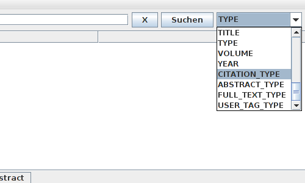

PDFBorx bietet die Möglichkeit importierte Dokumente auf vielfältige Weise zu durchsuchen. Sie können hierzu rechts neben der Suchleiste im oberen Bereich der Oberfläche vielfältige Suchoptionen wählen, neben den Standard Feld-Elementen können sie noch Volltextsuche, Zitatsuche und eine Suche im Abstract auswählen.

[zurück]